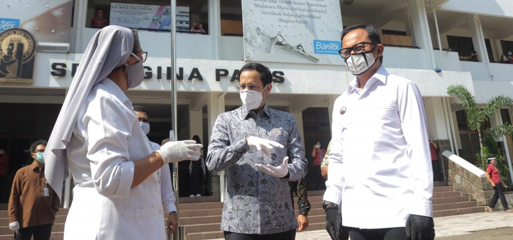
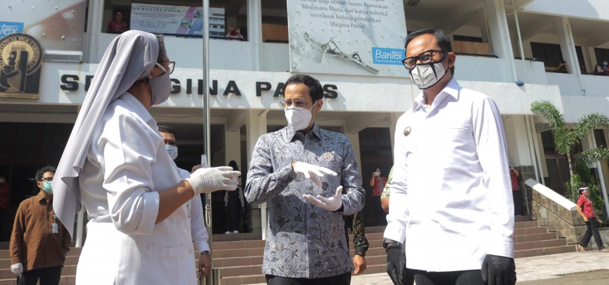
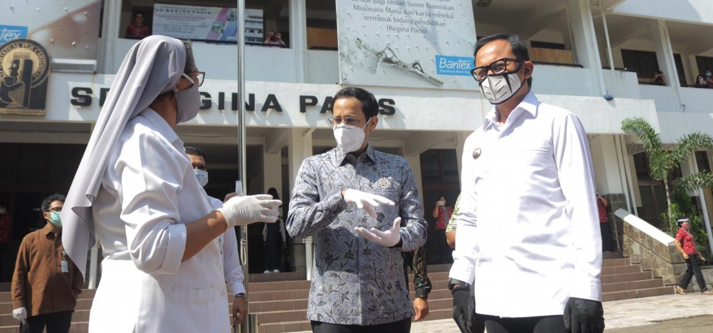
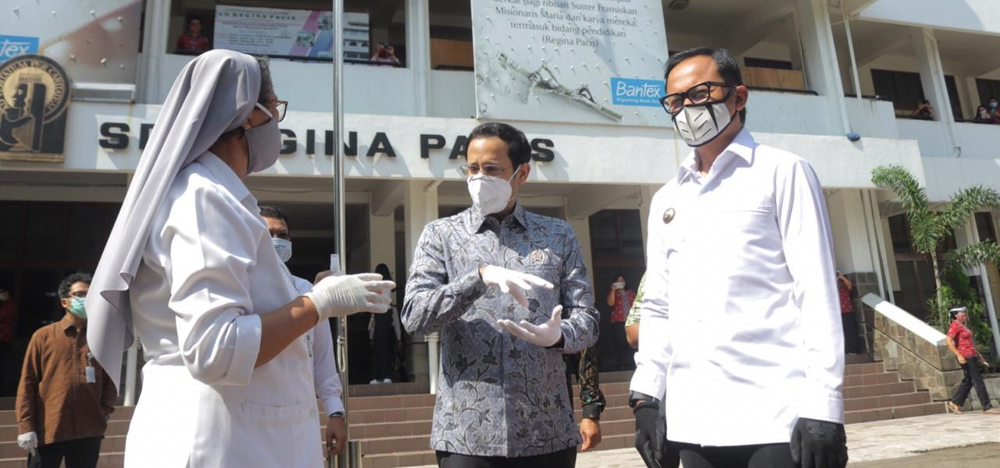
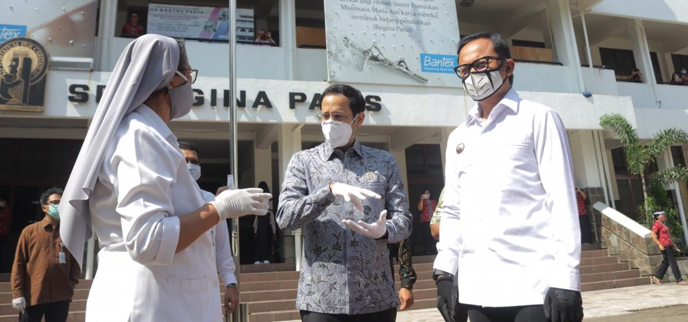
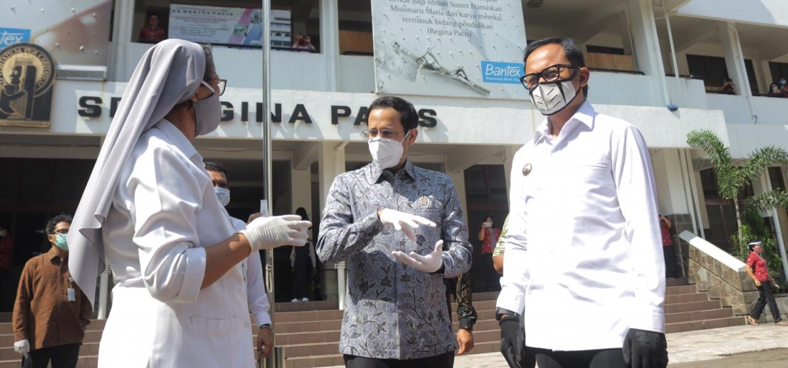

SMA Regina Pacis Bogor didirikan pada tanggal 1 Agustus 1955. Pada saat itu dipimpin oleh Sr. Berenice, FMM, berasal dari Amerika Serikat. Pada saat itu SMA Regina Pacis Bogor hanya menerima murid putri saja, baru pada tahun ajaran 1962 menerima murid putra. Karena pada saat itu belum memiliki gedung SMA maka digunakan gedung SMP sehingga kegiatan belajar mengajar dilakukan seusai murid-murid SMP belajar sampai akhirnya memiliki gedung sendiri.
Agustus 1988, gedung SMA didesain dan dibangun dengan penambahan ruang-ruang sesuai pesatnya perkembangan pendidikan. Akhirnya pada tahun 1989, gedung berlantai 3 untuk kegiatan belajar mengajar beridri dengan megahnya. Untuk Tahun ajaran 2013/2014 jumlah peserta didik SMA 898 anak sedang jumlah kelas 27 kelas di gedung dengan 3 lantai tersebut.
Visi
Menjadi institusi yang menumbuhkembangkan warganya menjadi pribadi yang utuh berlandaskan semangat FMMMisi
1. Memampukan warga untuk belajar secara holistik (to learn how to learn)2. Menumbuhkembangkan potensi warga
3. Menjadikan “pribadi yang tersedia bagi sesama” dan menghilangkan alienasi/keterasingan4. Aktif dalam mewujudkan kebenaran, kebaikan dan keindahan, perdamaian, keadilan dan keutuhan ciptaan

 
